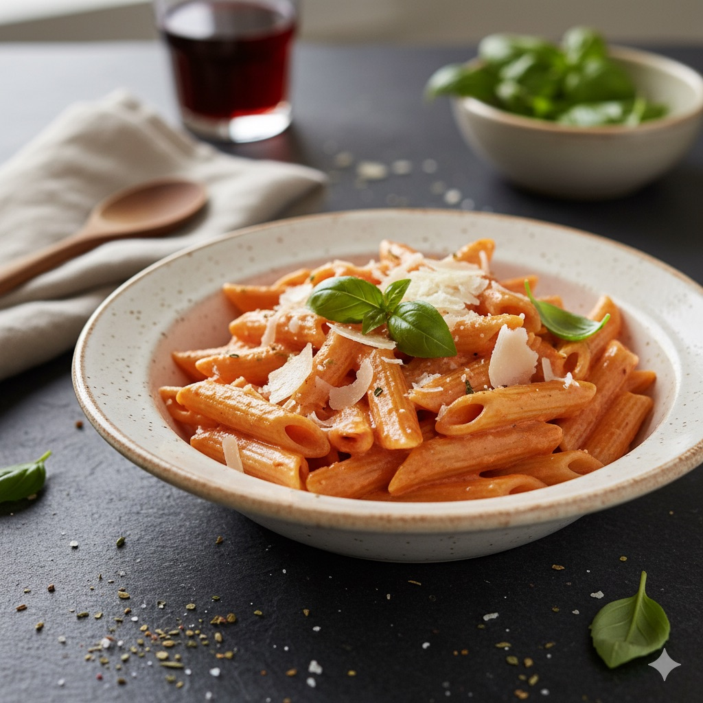

Kremowy makaron pomidorowy
Przygotowanie: 15 min • Gotowanie: 20 min • Porcje: 4

Składniki
- 400 g makaronu (np. penne lub spaghetti)
- 2 łyżki oliwy
- 1 cebula, pokrojona w kostkę
- 2 ząbki czosnku, drobno posiekane
- 1 puszka (400 g) pomidorów krojonych/passat y
- 1/2 szklanki śmietanki 30%
- 1/2 szklanki tartego parmezanu
- sól, pieprz, bazylia do smaku
Kroki
- Ugotuj makaron al dente zgodnie z instrukcją.
- Na patelni rozgrzej oliwę, zeszklij cebulę 5 minut. Dodaj czosnek na 1 minutę.
- Dodaj pomidory, duś 10–12 minut. Zmniejsz ogień, wlej śmietankę i dodaj parmezan.
- Wymieszaj z makaronem, dopraw solą, pieprzem i bazylią.